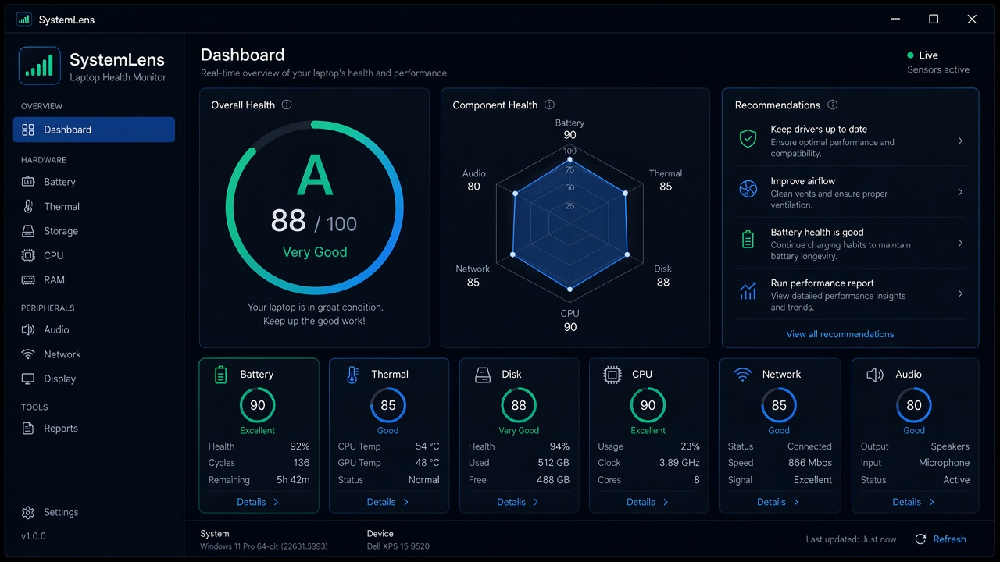

Overall health score
Letter grade and recommendations so you know what to fix first.

SystemLens
See battery, heat, storage, and performance in one score — then export a report when you need it.
Diagnostics
SystemLens runs a local PC health check across the systems that matter most on Windows.
Letter grade and recommendations so you know what to fix first.
Charge health and temperature readings for everyday laptop care.
Disk space and live processor/memory load without opening Task Manager.
Quick checks for the peripherals and connectivity you use daily.
Save snapshots and export JSON, CSV, or PDF for IT or personal records.
Windows-native collectors via systeminformation and PowerShell/WMI.
Get started
Install once, open the dashboard, and review modules at your pace.
Download the Windows installer and run it on Windows x64.
Read your overall score, then drill into Battery, Thermal, Storage, and more.
Save history snapshots and export JSON, CSV, or PDF from Reports.
FAQ
Straight answers for search and support.
Download SystemLens-Setup-Windows.exe, install on Windows x64, and open the app. The dashboard shows an overall health score plus seven diagnostic modules.
Yes. The Battery module reports charge and health-related metrics. The Thermal module tracks temperature-related readings so you can spot heat issues.
Yes. SystemLens is free to use and released under the MIT license. Source code lives at mahimapaseda/SystemLens.
No. Diagnostics run locally on your Windows machine. You export history snapshots as JSON, CSV, or PDF only when you choose to.
Download
Free Windows x64 installer. MIT licensed. Built for real hardware diagnostics.